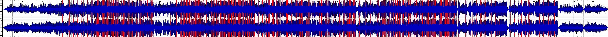

Lewis' project
Free Music Archive tracks analyses
This page contains analyses of tracks from the Free Music Archive. Analyses were done through the Sonic Visualiser software and Music21 for Python.
One distinct advantage a time frequency analysis has over a waveform analysis is that it better captures the general range of sound that can change throughout the song rather than simply highlighting very specific peaks or lows as in a waveform analysis. For example, in Marrakesch by Phillip Gross there are some very brief high peaks early in the song which you are immediately drawn to in the waveform analysis but they are not long enough to be significant in any way, whereas in the time frequency analysis you easily see that there is a consistent level of sound at that point in the song - the brief peaks are noticeable on close inspection but are not visually striking like they are in the waveform analysis.
The MFCC feature does not seem to capture the significant differences between any of the three tracks: in the case of Inner Love by Vincent Augustus and Space Love Attack by UltraCat, the histograms are understandably very similar to one another with only slight differences in some of the peaks of the features as both of the songs have an underlying bassy beat that consistently plays throughout each of the songs. However, on listening they are clearly from two distinct genres of music - Inner Love being hip-hop/R&B whereas Space Love Attack is a dance/electronic track. The MFCC does not capture the vocal element of Inner Love which easily distinguishes it from Space Love Attack. The third track, Glueworm Evening Blues by Lobo Loco, is a blues track that is completely different from the two we have just looked at - there are some changes in the number ranges of the features on the histogram compared to the other two (e.g. feature 0 is on a -30 to 0 scale rather than a -75 to 0 scale of the other two tracks) but generally it looks to be a relatively similar histogram to the other tracks, which does not reflect the stark difference that it has with those two.
Phillip Gross - Marrakesch
Metadata
| Title | Artist | Composer | Album | Copyright Info | Genre | Source | File Format | Number of Channels | Sample Rate | Bits Per Second | Duration |
|---|---|---|---|---|---|---|---|---|---|---|---|
| Marrakesch | Phillip Gross | Phillip Gross | Morocco | Creative Commons Attribution-NonCommercial-NoDerivatives 4.0 | Synth Pop | Free Music Archive | MP3 | 2 | 48000Hz | 184kbps | 1m58s |
Waveform and Spectrogram
DRVNOfficial - Obelisk MM
Metadata
| Title | Artist | Composer | Album | Copyright Info | Genre | Source | File Format | Number of Channels | Sample Rate | Bits Per Second | Duration |
|---|---|---|---|---|---|---|---|---|---|---|---|
| Obelisk MM | DRVNOfficial | DRVNOfficial | #4Head Ep.2 | Creative Commons Attribution-ShareAlike | Hip-Hop | Free Music Archive | MP3 | 2 | 44100Hz | 192kbps | 2m33s |
Waveform and Spectrogram

Dee Yan-Key - Driving Home
Metadata
| Title | Artist | Composer | Album | Copyright Info | Genre | Source | File Format | Number of Channels | Sample Rate | Bits Per Second | Duration |
|---|---|---|---|---|---|---|---|---|---|---|---|
| Driving Home | Dee Yan-Key | Dee Yan-Key | years and years ago | Creative Commons Attribution-NonCommercial-ShareAlike | Jazz | Free Music Archive | MP3 | 2 | 44100Hz | 184kbps | 5m24s |
Waveform and Spectrogram

Vincent Augustus - Inner Love
Analysis
Spectrogram
Mel Frequency Cepstral Coefficients